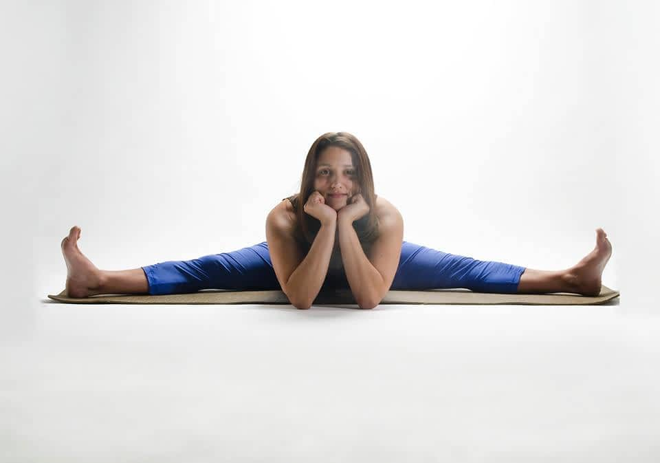
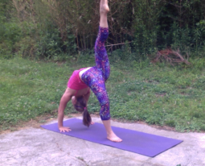
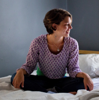
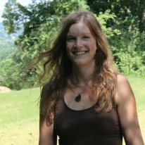

Jen Mainelli ~ Co-Owner Athens Yoga, Thai Massage, ERYT-200
Jen Mainelli is a Vinyasa yoga teacher, inspired by classical Hatha Yoga. She began her path to yoga in 2005 in Dayton, OH, with Ranjani Powers and Leon Lim, and fell in love with the benefits that naturally emerge through the knowledge and practice.
She became a certified teacher in 2009 through Cincinnati Yoga School and began teaching right away. The teacher training program was the segway for certification in Thai Yoga Massage and Reiki which she uses throughout her teaching, as well as providing the service of Thai Yoga Bodywork.
The training also included the Virtues First program, Yoga for the Eyes, and the Del Sarte system of Expression ( focused on enhancing the mind body connection), all used to enrich the yoga experience.
The goal of finishing her degree brought her to Athens' own Ohio University and she graduated in 2014 with a BS in Exercise Phisiology and Sport Science. 2015 obtained a Certification in Personal Training, and completed 1000 hours of teaching.
She hopes to bring self-confidence, playfulness, light and abundance to your life through her teaching. She reminds to her students that yoga is a journey and its never about perfection or being goal oriented. Instead it's about feeling ,and being present in your body because presence is freeing, and within the quiet of the mind, inspiration is born, and change happens. She says, “ change your perspective in yoga, change your life.”
She has been able to study with and take workshops from some great teachers like Brian Magone, Kali Ray, Brian Kest, Katie Holmes, Brian Friedman, Jeannie Faulkner, Kraig Weiss and Lila Lolling; and continues her education each year.
With her education in Physiology and Kinesiology she teaches an alignment based vinyasa practice with a focus on strength to build the appropriate muscles in yoga, therby preventing injury and noticing growth in the pracice as you get stronger. Pranayama (the practice of breathing with retention) is also a heavy focus of her teaching. Linking the breath with movement she teaches you to find a meditative state and go somewhere else in your practice; finding peace within the challenge. Her goal is to provide a safe and playful atmosphere for self discovery, healing and balance in our lives.

Dj Fuller ~ Certified TRE Provider, Co-Owner Athens Yoga, RYT-200
D.J. Fuller is the co-owner of Athens Yoga, LLC and owner/operator of Season’s Holistic Arts, LLC. She is also a Kundalini Reiki Master/Teacher and Seichim Reiki Master/Teacher. Her additional credits include leading Connections Through Motion (2009-2013),
a creative movement class that allowed participants to tap into and process emotions that had become trapped at the cellular level. D.J. is also a published author in “Simple Steps, Real Change Magazine” (2013) who has written of the intuitive connections of emotions to the body when the body is in stress.
Sara Lemos often invited D.J. as her guest on her radio program to inform her audience about body awareness and the chakra system. In 2012 D.J., was a featured speaker at the Peace Fest in Salem, Oregon lecturing on mindfulness in the body. Having been intrigued by,
and in love with yoga, since the age of 18, D.J. now enjoys teaching Hatha yoga with an Iyengar influence. She earned her yoga and TRE credentials from Donna Phillips and Monna Flynn, two very accomplished yoga teachers who study with yoga luminaries such as Lilah Schwartz (whose DVD, Healing our Backs, has been named to Dr. Phil's Top 10 Yoga DVDs list) and Aadil Palkhivala (founder of Purna Yoga),
who began his yoga training at the age of seven with B.K.S. Iyengar. She continues to enhance and add to her yoga training with Ms. Phillips, Ms. Flynn, and others through specific classes, seminars, and advanced training levels. lt’s D.J.’s belief that yoga is not merely an exercise regimen, but a way of life, and she fully ascribes to B.K.S. Iyengar’s statement: “My body is a temple, and my asanas are my prayers.”

Kristen Keen ~ RYT-200
Kristen Keen completed her 200-hour yoga training at It’s Yoga - Cincinnati in 2012.
After instructing yoga for three years in Cincinnati, she moved to Athens and continues to teach and study yoga.
Kristen enjoys many other forms of motion including martial arts, Pilates, dance, and Qigong; and will often weave
these elements into her practice and classes

Erin Pfahler ~ RYT-200
My yoga journey started when I was given a yoga mat in my high school years and started exploring what it meant to ‘listen to my body’ and move accordingly.
Almost ten years later, yoga has become that and so much more in my daily life. Yoga has helped me find peace and home in my own skin.
My hope is to share with others this joy and sense of stability that yoga has brought to all aspects of my life.
As a middle school teacher working in Charlotte, NC I began my 200-hour yoga teacher training through Bella Vita Yoga with two incredible teachers,
Jillian and Carrie. Bella Vita translates to ‘the beautiful or good life’ and that is exactly what I gained from the nine month teacher training program;
a deeper understanding for living in vibrance and letting my inner light shine brighter each day to create my beautiful life and help others see theirs.
I am constantly reading articles and books about yoga, trying new teachers, and discovery new awareness of my body and mind through my own personal practice.
I love creative flow and linking music to enhance my yoga classes. I love to laugh and be real with myself and in turn be real with my students.
I love to play and explore different poses and even invent at times. My hope each class is to create a nurturing environment where you,
no matter what physical or mental shape, level, or capacity can leave feeling refreshed, rejuvenated, and at peace in your skin.
Rachel Florian ~ RYT-200
Rachel just completed her yoga teacher training at Inhale Yoga Studio this past spring and is a 200-hour registered yoga teacher.
She has been practicing yoga for about 5 years now and draws inspiration from rebel yogis. She uses yoga to tune into her body and the moment and de-stress.
Her "slow flow" class has a heavy emphasis on alignment and movement with breath and moving in a way that feels natural and right.
This is good for beginners and those looking to deepen their practice.

Holly Fitch ~ RYT-200
Holly has been practicing yoga for several years, and somewhere along the way found it was too big of a gift not to share with others.
She completed a 200-hour teacher training with Michelle Stobart at Inhale yoga Studio in 2016.
The benefits of her yoga practice have enriched all aspects of her life and she is really excited to share these benefits with the Athens community.

Mary Moffat ~ Ph.D, Founder of A.C.I.A.
How and what creates an individual perceptions of ‘reality’? Mary created ACIA as a vehicle for short,
low cost workshops to benefit the integration of these perceptions in defining healthy life choices.
The benefit of the workshops is to encourage the local community to have information and experiences balancing body, mind, and spirit.
Body, mind and spirit will recalibrate given a chance to consider and then experience alternatives.
Mary’s experiences include a 35 year nursing career nursing in Ohio, Texas and Massachusetts, two Masters degrees (MEd in counseling and Library Science),
extensive shamanic studies on core shamanic practices, herbal studies, and various Buddhist theories.
She has studied with mindfulness teacher John Kabot Zinn, shamanic practice teacher and author Sandra Ingerman,
Foundation for Shamanic Studies (FSS) teachers, David Winston (AHG), and several Buddhist lineages, mostly Tibetan. She has an active meditation practice and enjoys yoga, music, dream work,
and exploring synchronicities. She has teamed up with Athens Yoga instructors because the teachers are dedicated and motivated in the same way as ACIA.
Mary is a native of Ohio who settled into the Athens area late 2012.
Curious minds welcome!.